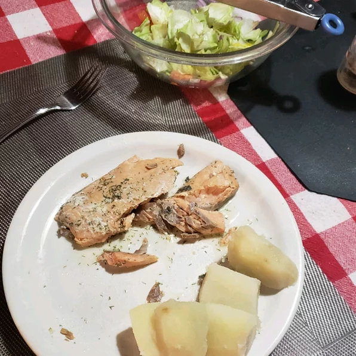

Salmon

Description
Everyone loves salmon, but using a "real" cooking method isn't always an option. In case all you have is a microwave, BevF has you covered.
- 1/4 cup butter
- 1/4 cup white wine
- 1 tablespoon lemon juice
- 1 tablespoon dried dill weed
- 1 teasponn white sugar
- Salt and ground black pepper to taste
- 4 salmon fillets
- Combine butter, wine, lemon juice, dill, sugar, salt, and black pepper together in a microwave-safe casserole dish; place cover on dish.
- Microwave butter mixture until butter is melted, 45 to 60 seconds. Add salmon, skin-side up, to butter mixture and place cover on dish. Microwave until salmon flakes easily with a fork, about 6 minutes.